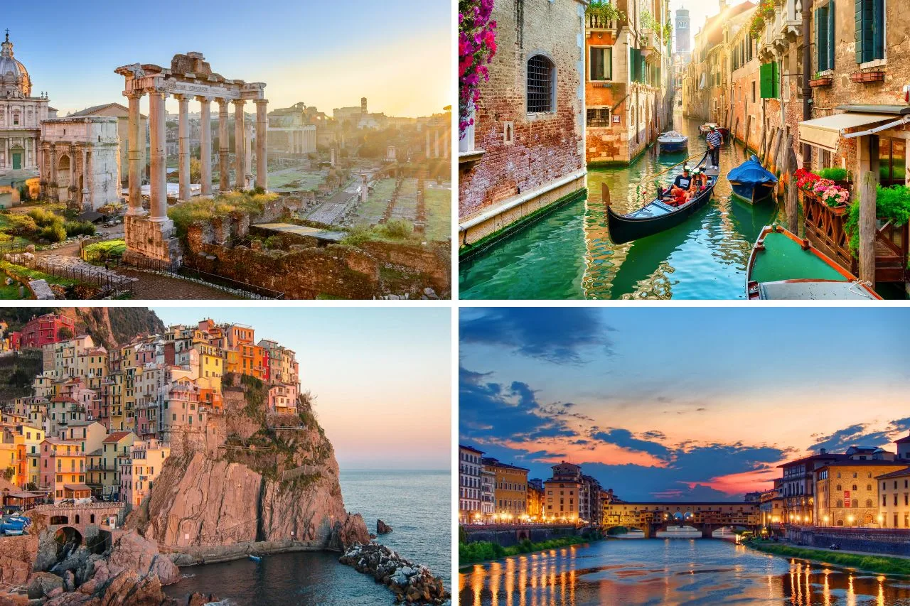
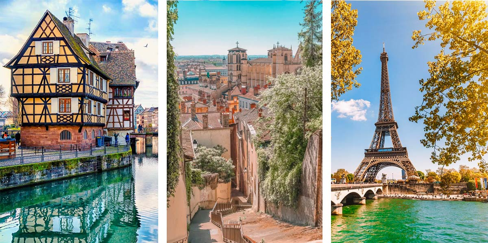
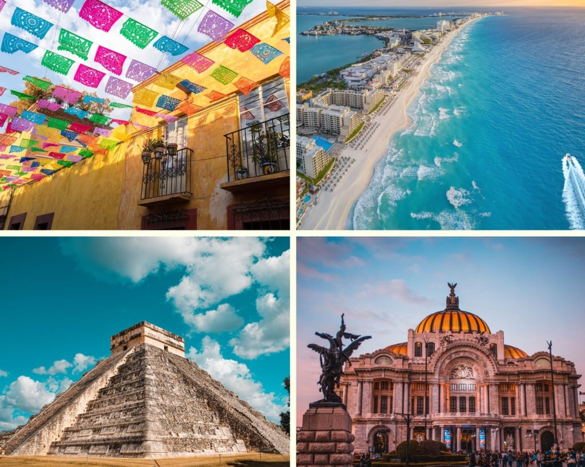

O meu nome é Wander José de Souza Junior, nasci em 02 de abril de 1991 em São João del-Rei, no interior de Minas Gerais, local onde resido até hoje. Sou um homem de 34 anos e casado há 14 anos. Ainda não sou pai, mas temos planos de ter filhos no futuro. No momento, atuo na venda de medicamentos e meus planos futuros incluem me especializar no setor de Tecnologia da Informação. Eu sempre tive um amor intenso pela tecnologia e pelos computadores. Desde que comecei a aprender sobre computadores, fiquei viciado e não consegui mais parar. Gosto muito de jogar jogos online e passo horas do meu dia explorando e procurando por tecnologias inovadoras.
| Itália: a Itália me atrai com sua história intrigante, sua gastronomia deliciosa, suas paisagens deslumbrantes e sua hospitalidade calorosa. |  |
| França: Para mim é a cidade mais romântica do mundo. É um lugar de elegância, sofisticação, história e cultura |  |
| México:Ainda pretendo tirar férias em Acapulco. |  |